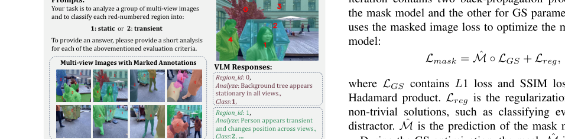
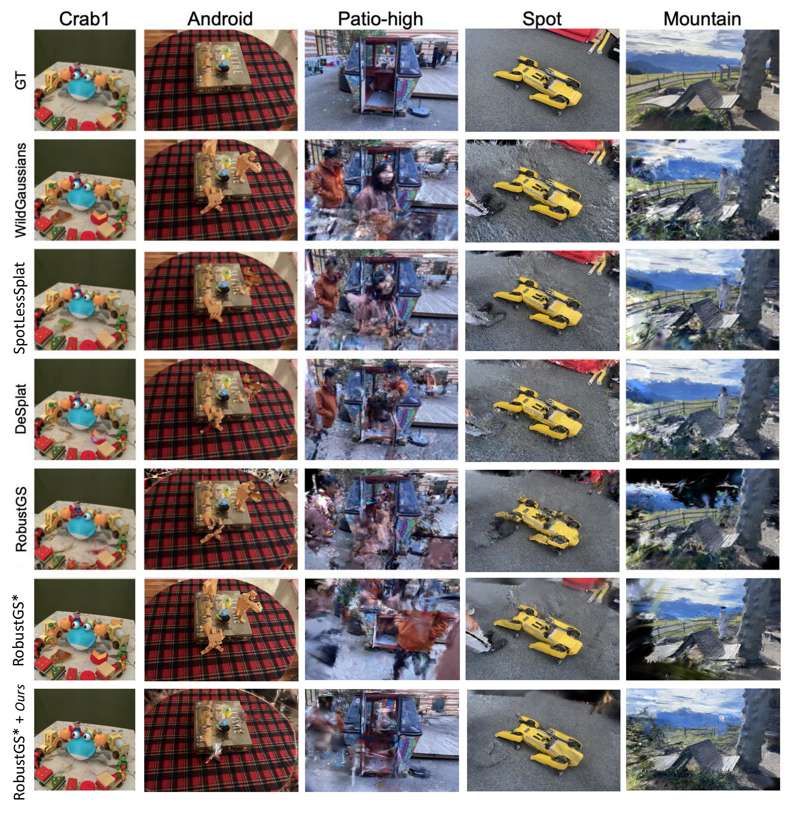
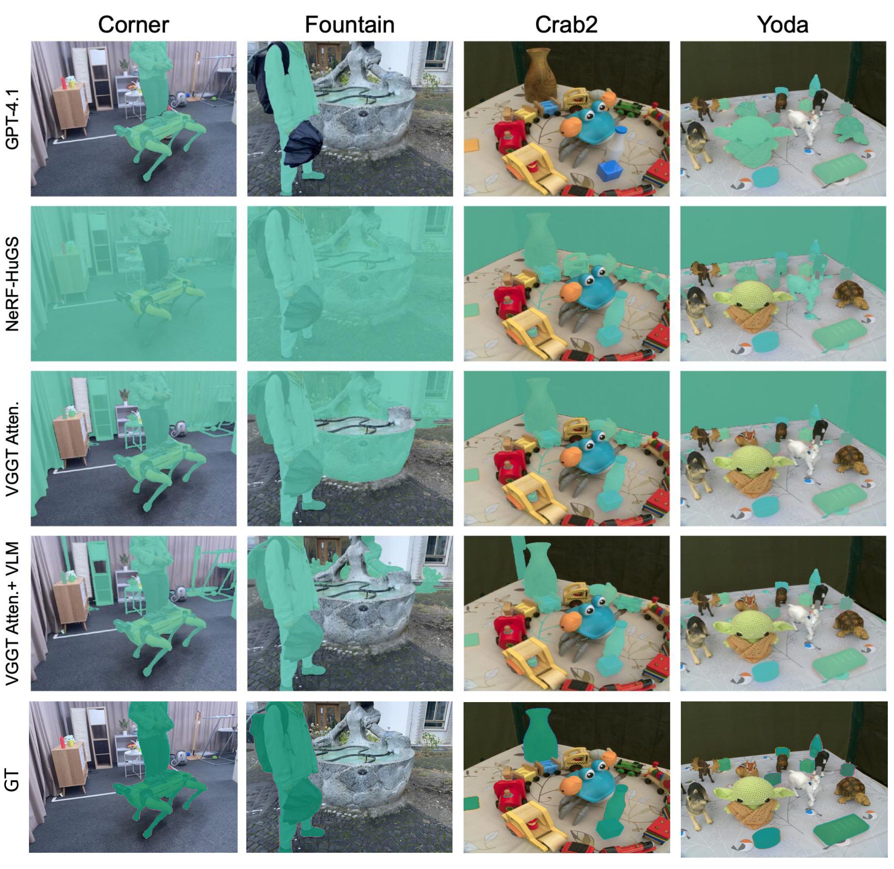
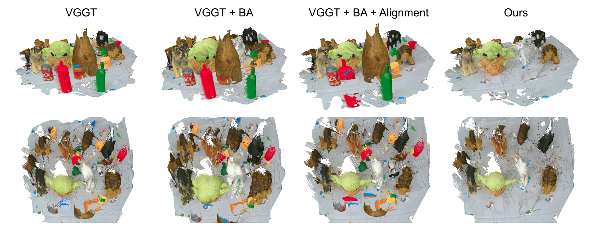

Sparse
简单摘要
这篇工作要解决的问题是：3D 高斯分布 (3DGS) 可在静态环境中实现高效训练和快速新颖视图合成。
对应的核心做法是：为了解决瞬态物体带来的挑战，出现了无干扰 3DGS 方法，并且在可以捕获密集图像时显示出有希望的结果。
从机制上看，关键设计在于：然而，它们的性能在稀疏输入条件下显着下降。
训练或推理层面的重点是：这种限制主要源于依赖颜色残差启发法来指导训练，而在观察有限的情况下，这种方法变得不可靠。
实验层面的主要信号是：在这项工作中，我们提出了一个框架，通过结合丰富的先验信息来增强稀疏视图条件下的无干扰 3DGS。


简而言之，这篇论文关注的核心是：这篇工作要解决的问题是：3D 高斯分布 (3DGS) 可在静态环境中实现高效训练和快速新颖视图合成。 对应的核心做法是：为了解决瞬态物体带来的挑战，出现了无干扰 3DGS 方法，并且在可以捕获密集图像时显示出有希望的结果。 从机制上看，关键设计在于：然而，它们的性能在稀疏输入条件下显着下降。 训练…
这篇工作要解决的问题是：多视图图像的真实感 3D 重建是计算机视觉和计算机图形学中的基本问题，具有广泛的机器人相关应用，例如虚拟现实、运动规划、导航等。
对应的核心做法是：神经辐射场 (NeRF) 通过利用隐式表示和体积渲染来提高视图合成质量，取得了重大突破。
从机制上看，关键设计在于：3D 高斯分布 (3DGS) 引入了基于点的显式表示，支持快速训练并实现高质量的实时渲染。
训练或推理层面的重点是：尽管取得了这些进步，3DGS 主要是为静态场景设计的，并且通常依赖密集捕获的图像来重建详细的 3D 几何形状。
实验层面的主要信号是：现有研究通过结合共同可见性和几何约束或利用数据驱动的前馈方法来探索稀疏视图重建，主要针对静态场景。
核心创新
综合引言与方法部分，这篇论文的核心创新可以概括为以下几方面：
1）问题定义与研究动机
这篇工作要解决的问题是：多视图图像的真实感 3D 重建是计算机视觉和计算机图形学中的基本问题，具有广泛的机器人相关应用，例如虚拟现实、运动规划、导航等。
对应的核心做法是：神经辐射场 (NeRF) 通过利用隐式表示和体积渲染来提高视图合成质量，取得了重大突破。
从机制上看，关键设计在于：3D 高斯分布 (3DGS) 引入了基于点的显式表示，支持快速训练并实现高质量的实时渲染。
训练或推理层面的重点是：尽管取得了这些进步，3DGS 主要是为静态场景设计的，并且通常依赖密集捕获的图像来重建详细的 3D 几何形状。
实验层面的主要信号是：现有研究通过结合共同可见性和几何约束或利用数据驱动的前馈方法来探索稀疏视图重建，主要针对静态场景。
2）方法框架与核心模块
这篇工作要解决的问题是：然后，我们使用与类无关的掩模预测器来处理每个图像并导出 2D 掩模 ，其中 表示图像中掩模的数量。
对应的核心做法是：正如之前的作品中所介绍的，SAM 倾向于过度分割图像。
从机制上看，关键设计在于：在这项工作中，我们使用 CropFormer 作为我们的掩模预测器，因为实体级分割非常适合无干扰任务。
训练或推理层面的重点是：考虑到颜色残差启发法在稀疏视图设置中不可靠，我们决定在 GS 训练之前加入丰富的掩模先验信息。
实验层面的主要信号是：具体来说，我们利用 VGGT 的注意力图来实现快速实体匹配（第 2 节）。
3）实验设计与工程价值
这篇工作要解决的问题是：我们从 RobustNeRF 数据集中选择了 5 个场景，从 NeRF on-the-go 数据集中选择了 6 个场景来评估我们的方法。
对应的核心做法是：每个场景由 6 个实验组成，其中 4、6 和 8 个视图被采样两次。
从机制上看，关键设计在于：视图采样过程作为聚类过程实现。
训练或推理层面的重点是：第一帧是随机选择的，只有当后续视图与已选择的视图共享超过 20 个共同可见点时，它们才会添加到集群中。
实验层面的主要信号是：对于掩模先验，我们将我们的方法与结合了 Grounding-SAM 和 NeRF-HuGS 的现有 VLM 模型进行了比较。
技术细节
下面按照论文的方法章节结构展开，重点说明模型的关键模块、公式设计和训练策略。
这篇工作要解决的问题是：然后，我们使用与类无关的掩模预测器来处理每个图像并导出 2D 掩模 ，其中 表示图像中掩模的数量。
对应的核心做法是：正如之前的作品中所介绍的，SAM 倾向于过度分割图像。
从机制上看，关键设计在于：在这项工作中，我们使用 CropFormer 作为我们的掩模预测器，因为实体级分割非常适合无干扰任务。
训练或推理层面的重点是：考虑到颜色残差启发法在稀疏视图设置中不可靠，我们决定在 GS 训练之前加入丰富的掩模先验信息。
实验层面的主要信号是：具体来说，我们利用 VGGT 的注意力图来实现快速实体匹配（第 2 节）。
$$ f\left((I_i)_{i=1}^N\right) = \left(\bg_i, D_i, P_i, T_i\right)_{i=1}^N. $$
这条公式用于定义模型中的核心计算关系：左侧给出目标量，右侧由输入与参数共同决定。阅读时可先关注 f、I_i、i、N 的物理/几何含义，再看它们如何影响训练目标或渲染结果。
$$ \mathcal{A} = \tok^I_{i, k} {\tok^I_j}^T / \sqrt{C_f}. $$
这条公式用于定义模型中的核心计算关系：左侧给出目标量，右侧由输入与参数共同决定。阅读时可先关注 A、i、k、I_j 的物理/几何含义，再看它们如何影响训练目标或渲染结果。
$$ Index_{j, s} = \arg \max_{s\in\{1, ..., S\}}(\bar{\mathcal{A}}). $$
这条公式用于定义模型中的核心计算关系：左侧给出目标量，右侧由输入与参数共同决定。阅读时可先关注 j、s、S、A 的物理/几何含义，再看它们如何影响训练目标或渲染结果。
$$ Recall = |\tilde{\tok}^{rep_{j}}_{i}| / |\tok^{proj_{i,k}}_{j}|, $$
这条公式用于定义模型中的核心计算关系：左侧给出目标量，右侧由输入与参数共同决定。阅读时可先关注 j、i、k 的物理/几何含义，再看它们如何影响训练目标或渲染结果。
$$ Score = (Threshold_{CD}-CD) / Threshold_{CD}. $$
这条公式用于定义模型中的核心计算关系：左侧给出目标量，右侧由输入与参数共同决定。阅读时可先关注 关键变量 的物理/几何含义，再看它们如何影响训练目标或渲染结果。
$$ \mathcal{L}_{mask} = \hat{\mathcal{M}} \circ \mathcal{L}_{GS} + \mathcal{L}_{reg}, $$
这条公式用于定义模型中的核心计算关系：左侧给出目标量，右侧由输入与参数共同决定。阅读时可先关注 L、M 的物理/几何含义，再看它们如何影响训练目标或渲染结果。



把全文方法串起来看，这篇论文的逻辑基本都遵循同一条主线：先把输入组织成更容易处理的表示，再通过模型结构和损失函数把这个表示推向目标输出，最后用可视化与数值实验共同证明该设计有效。
实验结论
实验部分主要回答两个问题：第一，方法是否真的优于已有基线；第二，这种优势来自哪一个设计决策。
这篇工作要解决的问题是：我们从 RobustNeRF 数据集中选择了 5 个场景，从 NeRF on-the-go 数据集中选择了 6 个场景来评估我们的方法。
对应的核心做法是：每个场景由 6 个实验组成，其中 4、6 和 8 个视图被采样两次。
从机制上看，关键设计在于：视图采样过程作为聚类过程实现。
训练或推理层面的重点是：第一帧是随机选择的，只有当后续视图与已选择的视图共享超过 20 个共同可见点时，它们才会添加到集群中。
实验层面的主要信号是：对于掩模先验，我们将我们的方法与结合了 Grounding-SAM 和 NeRF-HuGS 的现有 VLM 模型进行了比较。
- 方法在核心指标上的优势与结构设计和训练目标直接相关；
- 消融实验表明，拿掉关键模块后性能与结果质量都有明显回落；
- 论文不仅比较数值，也关注可视化质量、稳定性和泛化能力等更贴近真实使用的信号。
理解评价
这篇工作要解决的问题是：在这项工作中，我们提出了一种新的掩模先代方法，以增强稀疏视图条件下的无干扰 3D 高斯泼溅 (3DGS)。
对应的核心做法是：我们的方法利用几何基础模型（即 VGGT）以及强大的视觉语言模型（VLM）来生成强大且可靠的渲染结果。
从机制上看，关键设计在于：通过简单的掩模优先引导预热策略，我们显着提高了现有无干扰 3DGS 方法的性能。
如果把它当成研究参考，建议重点关注三件事：第一，这套方法真正依赖的归纳偏置是什么；第二，实验中真正拉开差距的模块是哪一个；第三，它的局限究竟来自数据、算力还是监督信号本身。
以下相关论文可以作为进一步追踪的入口：